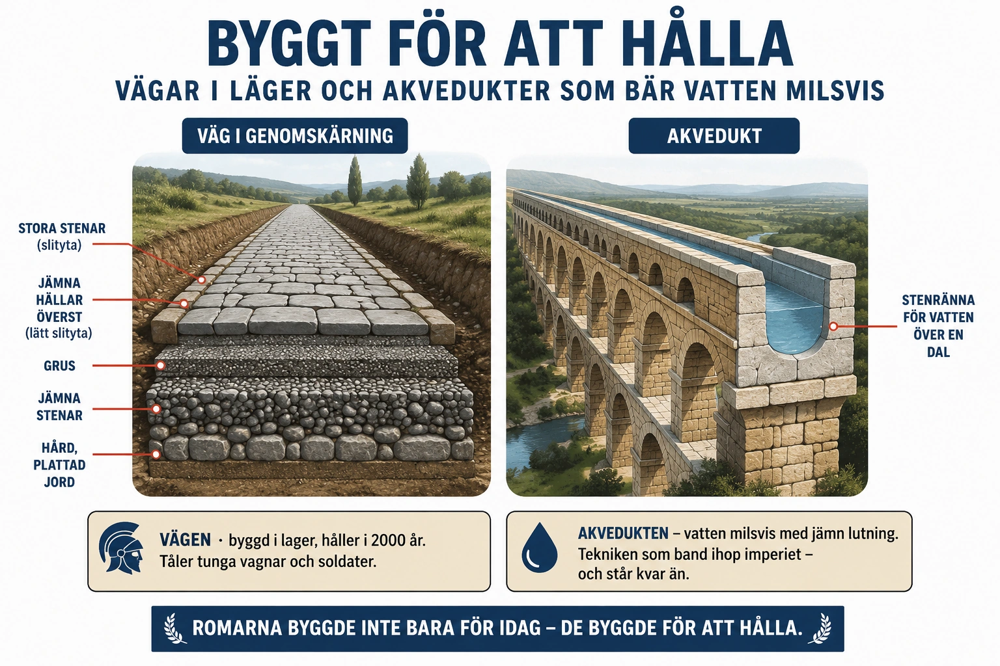

Standardtexten säger att romarna band ihop sitt imperium med vägar, städer och lag. Vi tänkte på lagen som ett verktyg. Men vägarna var det bokstavligen — byggda av sten, i lager, med en teknik så skicklig att en del av dem fortfarande går att gå på tvåtusen år senare. Roms verkliga kropp var inte dess arméer, utan dess byggen. Och att förstå dem är att förstå hur ett så stort rike över huvud taget kunde hålla ihop.
Vägarna. En romersk huvudväg var inte bara en upptrampad stig. Den byggdes i flera lager: först grävdes ett dike, sedan lades stora stenar i botten, därpå grus och krossat material, och överst jämna, tätt fogade stenhällar. Vägen välvdes lätt på mitten så att regnvatten rann av åt sidorna i diken, och den drogs så rak den bara kunde. Romarna byggde tiotusentals mil av sådana vägar genom hela riket. De var så välgjorda att somliga fortfarande finns kvar — och att en del moderna vägar följer exakt samma sträckning som romarna en gång stakade ut.

Akvedukterna. En stor stad behöver enorma mängder rent vatten. Romarna löste det med akvedukter — långa vattenledningar som förde friskt vatten från källor och berg långt borta ända in till städerna, ibland över tio mil. Konststycket var lutningen: vattnet rann hela vägen av sig självt, med hjälp av tyngdkraften, längs en ledning som sluttade helt jämnt och försiktigt nedåt kilometer efter kilometer. Där en dal låg i vägen bar romarna ledningen på rader av stenbågar högt över marken — och några av de akvedukterna står ännu i dag. Tack vare dem hade romerska städer offentliga badhus, fontäner och rinnande vatten — en levnadsstandard som Europa sedan inte skulle se igen på över tusen år efter Roms fall.
Betongen. Hemligheten bakom mycket av detta var ett material romarna närmast uppfann: en sorts betong gjord med vulkanisk aska. Den var stark, kunde gjutas i valv och bågar, och — märkligt nog — kunde till och med hårdna under vatten. Den har dessutom visat sig otroligt hållbar; romersk betong står ännu efter tvåtusen år, medan en del modern betong vittrar sönder på några årtionden. Forskare studerar än i dag den romerska betongen för att förstå varför den håller så bra.
Varför det spelade roll. Det häftiga är inte bara att teknik var avancerad — det är vad den gjorde. Vägarna lät arméer nå gränserna snabbt, lät handelsvaror flöda, lät budbärare och order färdas — och, som vi såg, lät nya idéer som kristendomen spridas från stad till stad. Akvedukterna gjorde det möjligt för miljonstäder att alls existera. Tekniken var det fysiska sättet att "sprida och bevara" — imperiet höll ihop därför att det bokstavligen var byggt för att göra det. "Alla vägar bär till Rom" var inte bara ett talesätt. Det var sten, grus och hällar, mil efter mil.
Och mycket av det lever kvar. Vi bygger fortfarande på städer romarna grundade, kör på vägar de stakade ut, och använder valv och bågar de fulländade. Men här ligger också en tråd in i nästa del: inte ens det bäst byggda imperium kunde i längden bygga bort sina problem. Vägar och akvedukter kräver ständigt underhåll, och en stat som blir för svag för att sköta dem ser dem långsamt förfalla. Vad som hände när Rom inte längre orkade hålla ihop allt detta — det är den sista dela ns fråga.